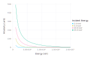
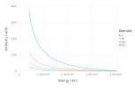
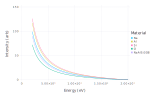
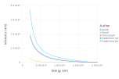

Comparing Bremsstrahlung Models
Bremsstrahlung is the radiation (X-rays) produced when a charged particle (electron) decelerates. Bremsstrahlung can be produced with any energy less than the incident charged particle's kinetic energy.
using NeXLCore # Implements the algorithms
using Gadfly # Plotting libraryKramer
The original model due Kramer was published in 1923. This model shows the general structure seen in more recent models. First, the emitted intensity starts at zero at the incident beam energy and increases with decreasing X-ray energy.
e0s = [ 2.0e3, 5.0e3, 10.0e3, 20.0e3]
# The element is iron
display(plot([ e->bremsstrahlung(Kramers1923, e, e0, n"Fe") for e0 in e0s ], 1.0e3, 20.0e3,
Guide.xlabel("Energy (eV)"), Guide.ylabel("Intensity (arb)"),
Guide.colorkey(title="Incident Energy", labels= map(e0->"$(e0/1000.0) keV", e0s))))
Second, higher Z elements produce more Bremsstrahlung intensity.
elems = [n"C", n"Al", n"Fe", n"Pb"]
# Incident beam energy is 20 keV
display(plot([ e->bremsstrahlung(Kramers1923, e, 20.0e3, elm) for elm in elems ], 2.0e3, 20.0e3,
Guide.xlabel("Energy (eV)"), Guide.ylabel("Intensity (arb)"),
Guide.colorkey(title="Element", labels= symbol.(elems))))
The Bremsstrahlung produced by a compound is the atomic-fraction weighted sum of the contributions of each of the elements.
mats = [ mat"Na", mat"Al", mat"Si", mat"O", mat"NaAlSi3O8" ]
# Incident beam energy is 20 keV
display(plot([ e->bremsstrahlung(Kramers1923, e, 20.0e3, mat) for mat in mats ], 2.0e3, 20.0e3,
Guide.xlabel("Energy (eV)"), Guide.ylabel("Intensity (arb)"),
Guide.colorkey(title="Material", labels= name.(mats))))
More Recent Models
More recent models can be divided into two classes - those with adjustable parameters and those without. The models of Lifshin (1974) and Reed (1975) have an additional fittable parameter that adapts Kramer's expression for atomic number and/or incident beam energy. The magnitude of this parameter can either be fitted to a measured spectrum or can be pre-determined.
# Incident beam energy is 20 keV and element Ti
display(plot([ e->bremsstrahlung(Lifshin1974, e, 20.0e3, n"Ti", a=0.01), e->bremsstrahlung(Reed1975, e, 20.0e3, n"Ti", b=0.01) ], #
2.0e3, 20.0e3, Guide.xlabel("Energy (eV)"), Guide.ylabel("Intensity (arb)"), #
Guide.colorkey(title="Author", labels=["Lifshin","Reed"])))The models of Smith (1975), Small (1987), Trincavelli (1997) and Castellano (2004) are fully parameterized save for a single global scale factor.
models = [ Smith1975, Small1987, Trincavelli1997, Castellano2004a, Castellano2004b ]
# Incident beam energy is 20 keV and element Ti
display(plot([ e->bremsstrahlung(model, e, 20.0e3, n"Ti") for model in models ], #
2.0e3, 20.0e3, Guide.xlabel("Energy (eV)"), Guide.ylabel("Intensity (arb)"), #
Guide.colorkey(title="Author", labels=["Smith","Small","Trincavelli", "Castellano (a)", "Castellano (b)"])))
models = [ Smith1975, Small1987, Trincavelli1997, Castellano2004a, Castellano2004b ]
# Incident beam energy is 5 keV and element Ti
display(plot([ e->bremsstrahlung(model, e, 5.0e3, n"Ti") for model in models ], #
1.0e3, 5.0e3, Guide.xlabel("Energy (eV)"), Guide.ylabel("Intensity (arb)"), #
Guide.colorkey(title="Author", labels=["Smith","Small","Trincavelli", "Castellano (a)", "Castellano (b)"])))